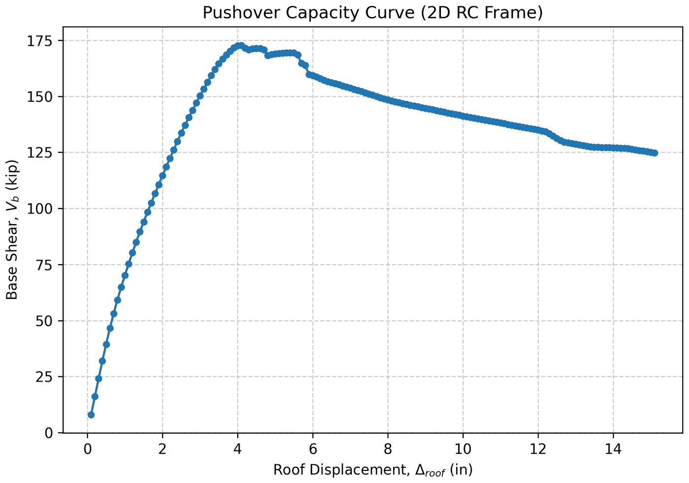
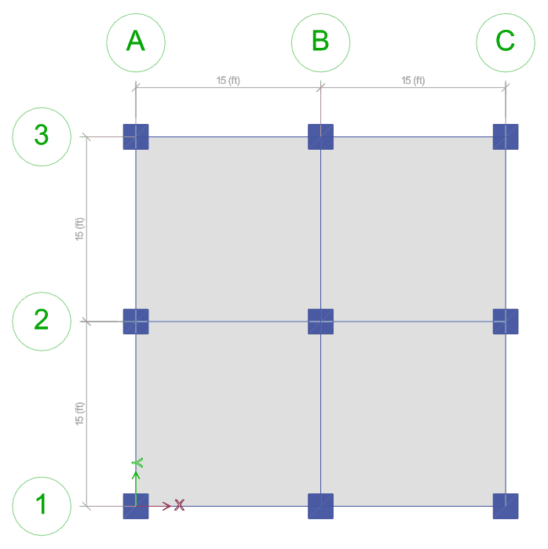

Seismic design and pushover analysis of a 3-story RC moment frame
I designed a three-story reinforced concrete building with special moment frames in both directions using ETABS. The building has a 30 ft by 30 ft plan, 15 ft bays and 15 ft story heights. I applied the ASCE 7-22 equivalent lateral force procedure for a Louisiana site and checked ACI 318-19 requirements for special moment frames, including strong-column/weak-beam behavior, minimum reinforcement and confinement.
For the selected site, seismic demand was low: the ETABS design base shear was 12.37 kips, the first two modal periods were 0.425 s, and elastic story drifts were below 0.01%. Gravity loads and minimum special moment frame dimensions governed member sizing more than seismic forces.

| Design data | |
|---|---|
| Materials | f'c = 4,000 psi, Grade 60 steel |
| Loads | Superimposed dead 45 psf, live 40 psf |
| Seismic | SDS = 0.13g, SD1 = 0.05g, SDC B, R = 8, Ω0 = 3, Cd = 5.5 |
| Columns | 24 x 24 in, 8-#8 bars |
| Beams | 12 x 24 in, 3-#8 top and bottom |
| Slab | 8 in, rigid diaphragm |
To investigate nonlinear response, I built a simplified 2D OpenSees model of one frame line. Columns used fiber sections with confined core concrete, unconfined cover concrete and P-delta effects; beams remained elastic. After applying gravity loads, I performed a displacement-controlled pushover analysis with a 1:2:3 lateral load pattern.

The model reached a peak base shear of approximately 172 kips at 4 in of roof displacement, followed by gradual strength loss. It carried approximately 125 kips at 7% maximum interstory drift. Base shears at the study's 1%, 2% and 4% drift reference levels were approximately 170, 160 and 143 kips, respectively.
The results apply to a simplified 2D model with elastic beams and column nonlinearity under monotonic loading. Joint shear and bond-slip were not modeled. The plotted drift levels are reference markers for this study; they do not establish ASCE 41 performance classifications.
Additional figures



